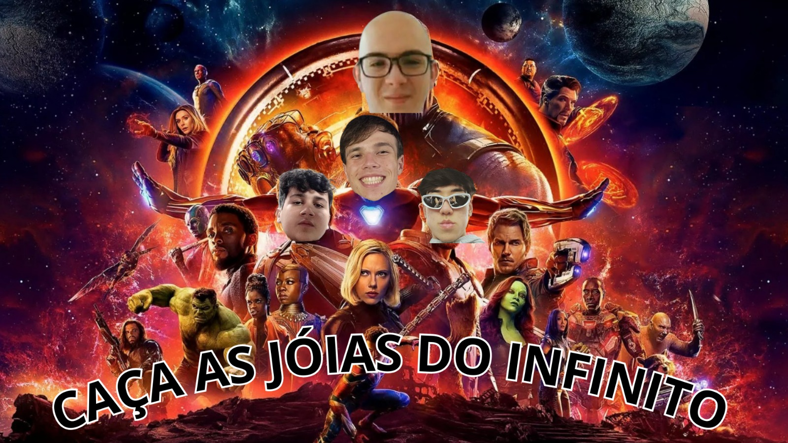

Atividades Matemática:
Primeiro Trimestre
Atividade de Trigonometria - Arcos e Angulos

Nessa atividade, tivemos que produzir uma trilha dentro do ambiente da escola utilizando os conceitos de arcos e ângulos.
Eu e meu grupo fizemos um vídeo, foi muito divertido o processo da criação do mapa, e da gravação do vídeo.
Competências e habilidades: C2 H5 H16
Link Da Atividade